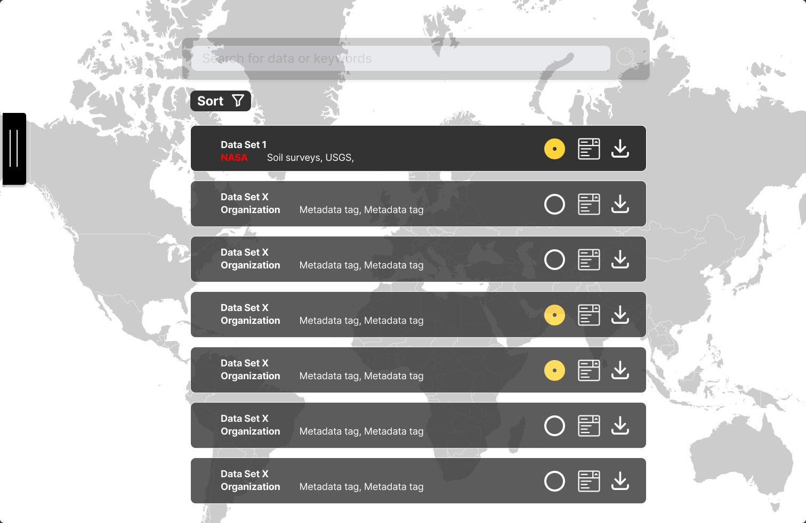
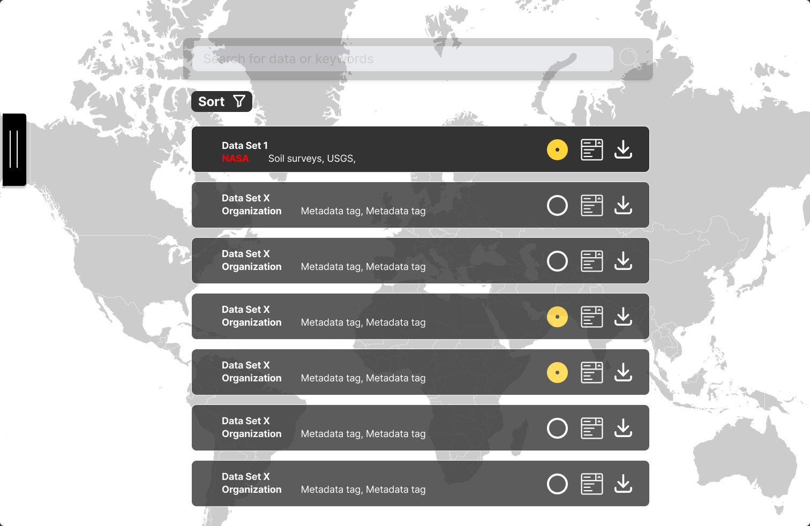

Transforming complex NASA satellite data into accessible agricultural insights for farmers.
Situation
Agriculturists consistently face significant barriers when trying to access critical environmental data that could inform their farming decisions. While valuable information exists regarding climate projections, soil quality, and water conditions, this data is typically stored in complex, technical repositories like NASA OpenEarth.
The raw data from NASA, ESA, and other space agencies is often too complex for non-technical users to interpret and effectively utilize in agricultural decision-making, creating a significant accessibility gap that affects farmers' ability to make data-driven decisions.
Task
Our challenge was to bridge the gap between highly technical satellite data and practical agricultural applications. Specifically, we needed to:
- Make NASA OpenEarth data portal accessible to farmers without technical backgrounds
- Focus on the most relevant agricultural indicators: weather forecasts, air/water/soil conditions, and food market monitoring
- Create an intuitive interface that could process complex satellite data
- Develop a solution within the 48-hour hackathon timeframe while leveraging available subject matter experts
The core question we aimed to answer was: "How might we make data from NASA, ESA, and other agencies more accessible to agriculturists?"
Action
Our team executed a rapid ideation and development process over 48 hours:
Design Approach:
- Drew inspiration from established data visualization platforms like Tableau to create familiar user interfaces
- Focused on abstracting away OpenEarth's complex features to highlight only agriculturally relevant data
- Designed around three primary indicators farmers need: weather forecasts, environmental conditions, and food market monitoring
Technical Implementation:
- Collaborated with data scientists who wrote backend scripts to pre-process and filter raw satellite data
- Utilized InSAR technology to track Earth's surface changes, vegetation growth, and water content
- Created a Tableau-like dashboard interface that distilled complex open data into actionable insights
- Leveraged access to subject matter experts throughout the hackathon to validate our approach
Learning Process:
- Gained hands-on experience with the challenges of designing effective data dashboards
- Applied knowledge of Earth monitoring satellites and radar technology to practical agricultural applications
Result
Solution Delivered:
"Project Soil Tycoon" successfully addressed the accessibility challenge by creating an intuitive application that transformed complex NASA Earth data into farmer-friendly insights. The solution effectively abstracted technical complexity while maintaining data accuracy and relevance.
Key Outcomes:
- Recognition: Won 2nd place in the Washington, DC NASA Space Apps Hackathon
- User Impact: Created a pathway for farmers to access previously inaccessible environmental data
- Technical Achievement: Successfully integrated InSAR satellite data with user-friendly dashboard design
- Validation: Received positive feedback from subject matter experts and judges
Impact:
The project demonstrated that complex space agency data could be made accessible to agricultural professionals, potentially improving crop management decisions and farming outcomes through better access to environmental intelligence.

Search and Results pages from the Current NASA Earth Data interface
 

Key Takeaways
This project reinforced the importance of user-centered design in data visualization. The challenge of making complex technical data accessible to non-technical users requires careful consideration of user needs, familiar interface patterns, and iterative validation with subject matter experts.
Technologies & Tools
NASA OpenEarth API, ESA Sentinel satellite data, InSAR technology, Tableau-inspired dashboard design, rapid prototyping, hackathon methodology, data visualization principles
Team & Collaboration
Worked as part of a multidisciplinary team during the 48-hour hackathon, collaborating with data scientists, subject matter experts, and other designers to create a comprehensive solution that balanced technical feasibility with user experience.